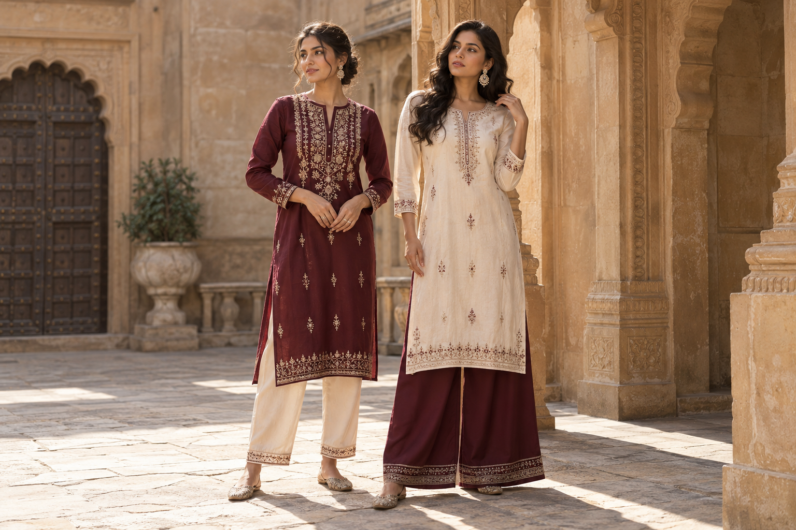

01
The Kurti Edit
Familiar roots. A fresh expression.
Thoughtfully styled kurtis and effortless bottom wear. For the little moments, and everything in between.
Explore the collections ↗
THE EVERYDAY EDIT 01 / 02Two wardrobe essentials.
A world of ways to wear them.
We love the ease of a well-paired outfit. The quiet charm of a kurti. The freedom of a flowing silhouette. Anisha brings them together in a wardrobe that feels as natural as being yourself.
Simply, anisha.Explore straight and relaxed silhouettes, subtle detailing, and colour that brings your everyday wardrobe to life.
Clean-lined straight pants and easy, flowing palazzos. Wear them with your favourite kurti, then mix them into the rest of your wardrobe.
Collection enquiries, styling questions,
or a visit to the studio — say hello.
New edits, outfit inspiration
and behind-the-scenes moments.
For collection enquiries,
collaborations and boutique partnerships.
A little help with colours,
sizes and your perfect pairing.
Sample address: Studio 12, Rose Lane
Jaipur, Rajasthan, India
Monday – Saturday
10:00 AM – 7:00 PM IST
Sunday · By appointment
Explore the collection up close,
discover your fit, and find
a pairing that feels like you.
Share the style you love, your preferred colour and size, and any date you have in mind. A screenshot of the look helps too.
Yes — include the styles, approximate quantities, your location and preferred timeline so the enquiry can be discussed in detail.
Size guides, current availability and order terms will be added with the final collection. The clothing shown here is concept imagery.